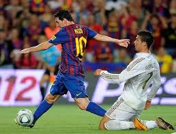

Football is my favorite hobby and an important part of my daily life. I regularly play football as it
helps me develop teamwork, coordination, stamina, and strategic thinking. The fast-paced nature of the
game pushes me to stay physically fit while also improving my decision-making skills on the field.
More than just a sport, football is my main way to release stress and frustration, helping me clear
my mind and stay mentally balanced. Playing football keeps me active, focused, and motivated both
physically and emotionally.Lionel Messi is the greatest football player of all time, and there is no doubt about it. His consistency, skill, vision, and impact on the game place him above every other player in football history. In the same way, FC Barcelonastands as the greatest football club of all time, defined by its philosophy, style of play, and unmatched legacy. Following Messi and Barcelona has shaped my love for football and continues to influence how I view and play the game.

I dont have any picture of me playing
Working Out 🏋️♂️
Working out is something I do mainly to stay healthy and maintain a good physical routine. I focus on
simple exercises that improve strength, posture, and overall fitness rather than intense training.
Unlike football, which is fast-paced and emotionally engaging, working out gives me a calmer and more
disciplined way to take care of my body. It helps me stay consistent and supports my long-term health.
Movies and Television Series 🍿
I enjoy watching movies and TV series as a way to relax and stay engaged with good storytelling. I am
particularly interested in series like Loki and Game of Thrones, which keep me engaged through strong
characters, plot twists, and immersive worlds. When it comes to movies, I enjoy large-scale films such
as Avengers: Endgame, which combine action, emotion, and long-term storytelling. Watching movies and
series helps me unwind while also appreciating creative narratives and visual presentation.
Gaming and Gaming Content 🎮
I enjoy gaming, mainly on mobile platforms, as it helps me relax and stay entertained. Along with
playing games myself, I also like watching gaming content, especially Minecraft videos such as SMP
gameplay and challenge-based content. Series like Unstable SMP and Lifesteal, along with challenge
videos like manhunts by creators such as Dream, keep me engaged through creativity, strategy, and
fast-paced gameplay. Watching and playing games helps me unwind while also appreciating teamwork,
problem-solving, and imaginative world-building.
Coding 🧑💻
I have a basic interest in coding and enjoy working on it occasionally. I like experimenting with simple
programs and web pages, which helps me understand how logic and structure work in software development.
Even though I am still learning, coding gives me a sense of satisfaction when things work correctly and
encourages me to think more clearly and systematically.